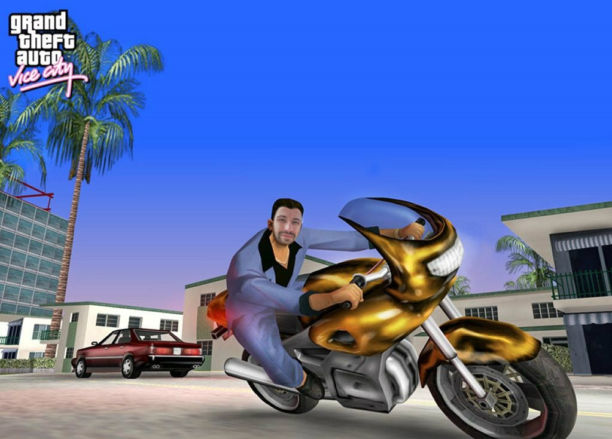
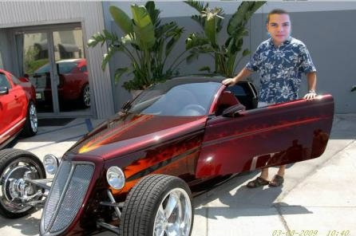
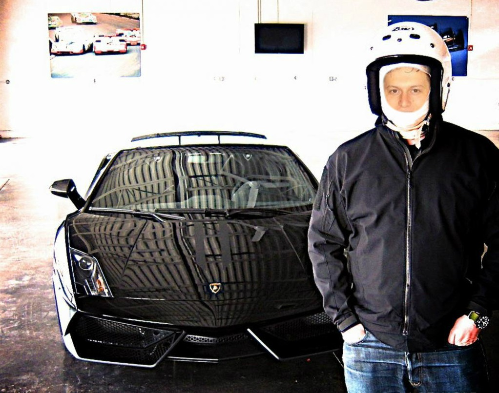
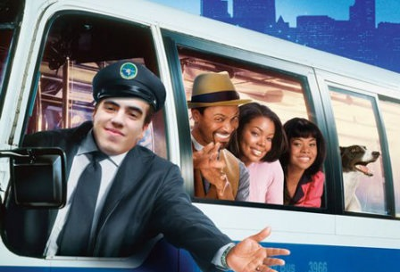

В случай че имате нужда да преборите трафика и задръстванията и най-вече ако търсите по-атрактивен и екстремен начин да стигнете до където и да е, възможността да наемете мотор от нас е донякъде възможна. За вашето гарантирано пристигане на време ще се погрижи не безизвестния шофьор и каскадьор Ангел Георгиев, който все още не е част от нашия екип поради застрахователни причини и в повечето случаи не успяваме да се свържим с него за поръчки от клиенти. Но все пак ако не чувствате вече ръката си от натискане на клаксона и заедно с това нямате никакво чувство за самосъхранение, не се колебайте да използвате нашата услуга.
Това, което гарантираме е, че ще се опитаме да го намерим и пратим на нужния адрес. Имайте предвид, че интервенциите по пътищата са му спечелили възможността да бъде лице на популярната игра Grand Theft Auto: Vice City, въпреки че в последствие се отказва, признавайки, че не иска децата му да разбират с какво се занимава наистина. Така че оставаме преценката на вас. Ако имате нужда, това е вашата възможност.
Не носим отговорност за каквито и да е щети, било то телесни или материални.
Цена: 123 лв.

Ако желаете да заложите на не толкова бързия и екстремен транспорт, ако обичате да се наслаждавате на пътя и ако сте почитател на класическите елегантни автомобили...до скоро можехте да намерите това при нас. За съжаление няколко от нашите автомобили изчезнаха и в момента разчитаме на няколко древни машини, които са изключително неудобни, но все пак ще ви свършат работа, вслучай че за вас времето никога не е било пари.
В момента услугата не е налична, поради липса на шофьори, желаещи да карат настоящите автомобили.
Поради огромния интерес към тази услуга и тъй като бяхме заринати от въпроси, какво се случва с Богомил Ангелов, който до скоро отговаряше и беше шофьор на класическите автомобили, искаме да съобщим, че всичко с него е наред. В момента преследва Ангел Георгиев (виж наем мотор), за който смята, че е откраднал изчезналите превозни средства. Веднага щом се върне ще възобновим тази услуга, като също така ще пободбрим услугата за наемане на мотор, знаейки вече местоположението на Ангел.
Цена: 123 лв.

Ако нямате проблем с това, че се задава нова продукция на „Бързи и яростни”, впреки че зад името ще стои абсурдното вече число 7, то най-вероятно сте почитател на високите скорости и бързите коли. Това означава, че вероятно сте попаднали на най-правилната за вас услуга, вслучай че имате нужда от транспорт. Ако пък не изпитвате страх от нищо или просто имате психически отклонения, леки или тежки, то със сигурност това е правилната услуга за вас.
Разполагаме със няколко великолепни автомобила, които разбиват всякакви представи за бърза скорост. Понякога пък просто се разбиват с бърза скорост и гледката е вън от всякакви представи, но когато зад волана е нашият безценен шофьор Светлин Наков може да бъдете спокойни. Поне той така казва.
Цена: 123 лв.

Случвало ли ви се е да пътувате за някъде и единственото свободно място в колата е багажника. Е на един човек от нашия екип му се е случвало многократно, споделяйки, че колкото и спокойно да е отзад, удобството винаги трябва е главен фактор. Този човек е именно Николай Банкин. Той е причината да пуснем в движение и нашия специален автобус, дело не на кой да е, а именно на Николай. С него може да пътувате до която точка на света пожелаете. Имайте впредвид, че ако сте група над 15 човека, пътуваме единствено в равнинни зони.
Автобусът е оборудван със всички екстри, включително и катапултиращи седалки. Наложи се да се сдобием с тях под натиск на наши клиенти, след като Банкин спечели за пореден път световния шампионат по автомобилизъм „Drink & Drive”, който странно, но няма нищо общо с услугата, носеща същото име.
Цена: 123 лв.

Възползвайте се и от новите ни куриерски услуги. Извършваме доставки на каквото и да е, до която и да е точка по света, като имаме както сухопътен, така и морски транспорт. Сомалия е единствената дестинация, която не достъпваме. Но и това се е случвало, веднъж.
Гарантираме пристигане на доставката до 30 дни, като срока се удължава в зависимост от почивните дни както следва:
- при наличие на 1 почивен ден – срок на доставка: 33 дни;
- при наличие на 2 или повече почивни дни – срок на доставка: неограничен;
Не носим отговорност за загубени или присвоени незаконно пратки.
Цена: 123 лв.